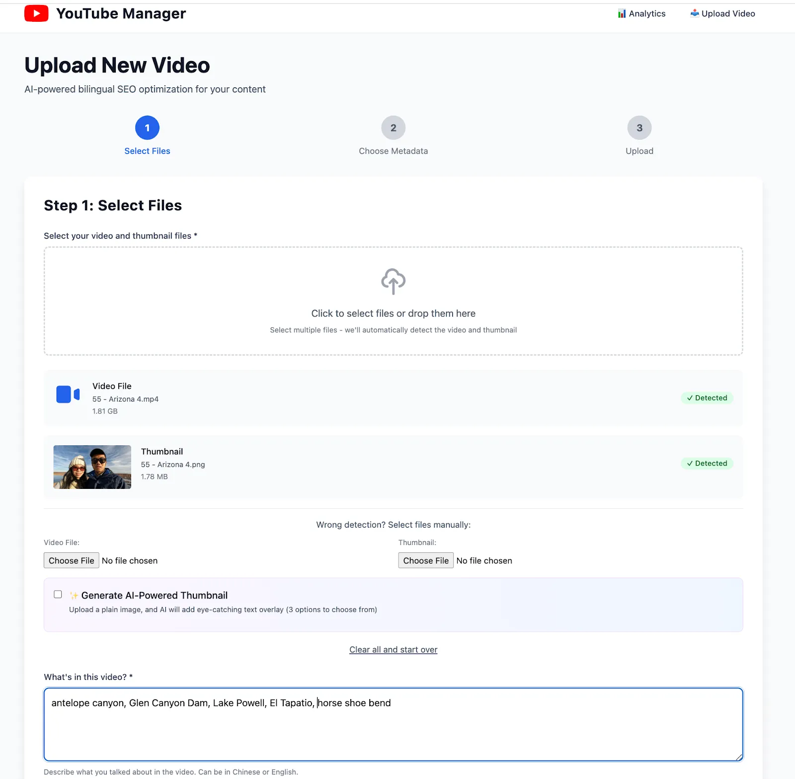
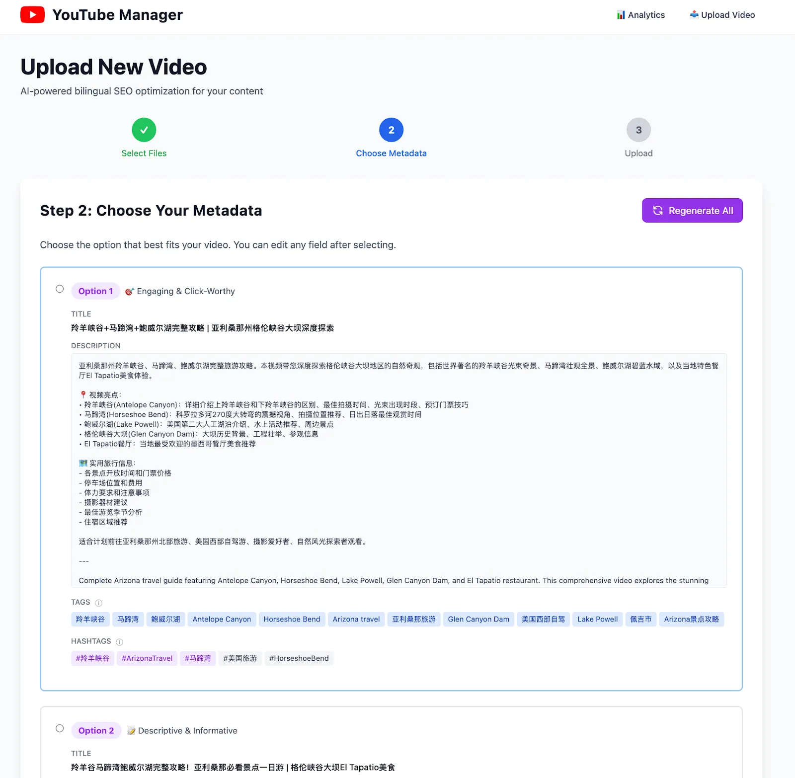
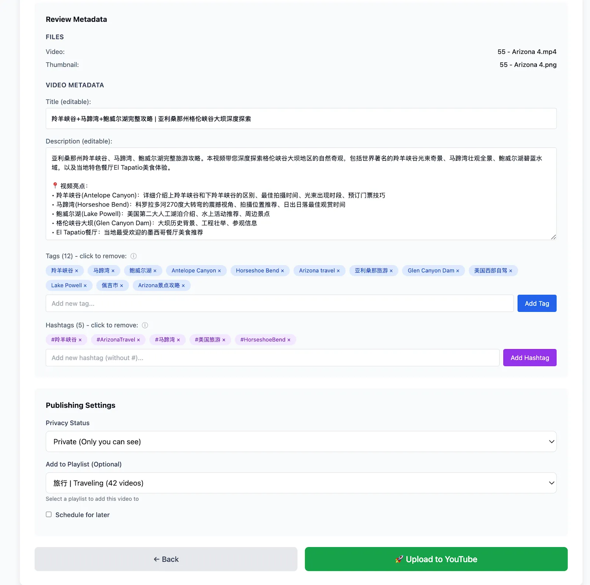
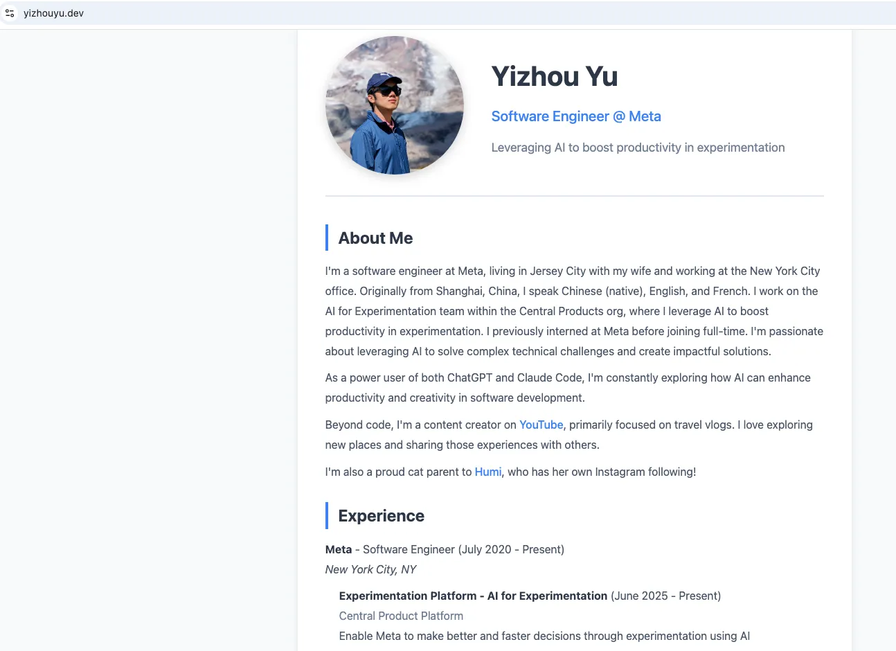
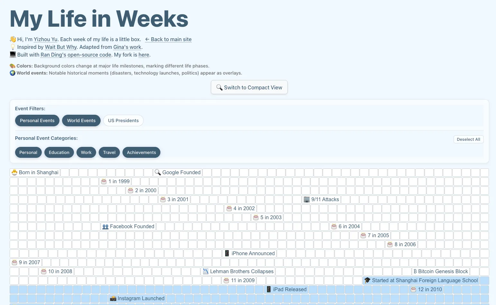
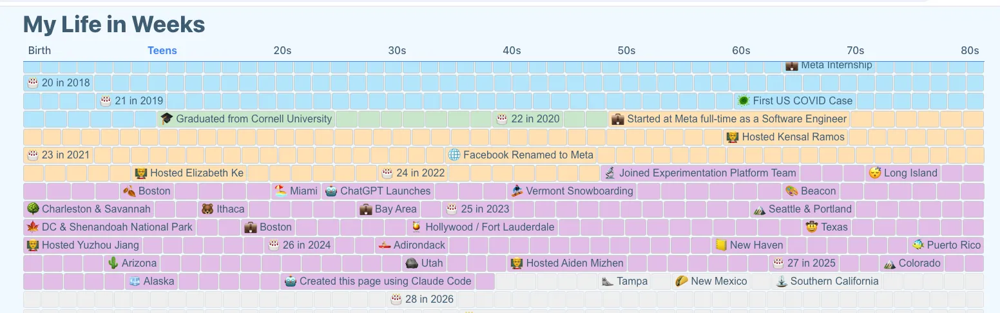

What I Built:
- YouTube Manager — AI-powered SEO tool with web UI (54 commits)
- My personal page (https://yizhouyu.dev) — Personal site that sat empty since 2017 (45 commits)
- Life in Weeks (https://yizhouyu.dev/weeks) — Interactive timeline for noteworthy life events (38 commits)
137 commits. Zero lines of code written by hand.
I wrote this post with Claude Code as well — I gave it the GitHub repos to research commit history, then let it edit its draft via voice dictation.
TL;DR - Key Takeaways
If you're skimming, here's what matters:
- Research overhead → zero: No more "learn framework X before building Y." Just ask Claude Code.
- The SWE skill that matters most: Knowing which questions to ask (concurrency, error handling), not writing syntax.
- Claude helps with non-coding tasks too: Domain purchasing recommendations (suggested Cloudflare), DNS configuration, deployment setup—all the operational stuff that usually requires separate research.
- Vibe coding ≠ production engineering: No code review/RFC/oncall concerns = 80% less friction. This unlocks a different kind of velocity.
- Voice + async = game changer: Dictate features instead of typing → come back → Claude built it.
- Multitasking across projects: Ran three separate VS Code windows with Claude Code instances simultaneously.
- $100/month Claude Max is worth it if you have side project ideas that never materialize due to execution barriers.
- The skill gap is narrowing but not closing: Non-engineers can build functional apps now. Building robust/secure/scalable systems still requires engineering judgment.
- These are personal consumption tools: Not production-ready apps yet. Building for production with Claude Code is the next frontier to explore.
Still interested? Read on for the detailed story.
Why This Matters: The Conversation That Started It All
I'm an amateur YouTube creator on the side (travel vlog in Chinese). For years, I've known SEO matters—optimized titles, descriptions, tags—but I just didn't care enough to invest the time. Writing good SEO metadata involves a fair amount of effort. So I... didn't do it.
Last Friday: Conversation with my teammate Gary. He recommended I actually do some SEO for my
videos.
Saturday morning: "Okay, let me put Claude Code to the test."
This wasn't some grand plan. It was: "Can this thing actually solve a real problem I have?"
Spoiler: Yes. And then I got carried away and built two more things.
The Projects: How They Actually Evolved
YouTube Manager: From Script to Full Application
Saturday morning - The First Task:
"Write me a script to replace all my previous videos' titles and descriptions with SEO-enhanced
versions. Generate suggestions and let me review before applying."
This was the test. Can Claude Code actually understand:
- YouTube API authentication
- Fetching all my videos
- Generating bilingual SEO metadata (Chinese primary, English secondary)
- Side-by-side comparison UI
- Manual review workflow
90 minutes later: fully working CLI tool. OAuth2 authentication, batch processing, beautiful
side-by-side diffs using Rich tables, API rate limiting, video tracking to prevent reprocessing.
I tested it. It worked. The metadata suggestions were actually good.
Saturday afternoon - The Natural Progression:
"Okay, this works. But I want a web UI for this."
At this point I trusted Claude Code enough to expand scope. The progression felt natural:
- Prove the core concept (SEO script) ✓
- Build a better interface (web UI)
- Add complementary features (analytics, thumbnails, upload workflow)
By Sunday: full-stack Flask app with analytics dashboard, smart upload workflow, AI-powered thumbnail generation, real-time progress tracking.
  This organic evolution is important. I didn't plan to build a full web app. I started with the minimum viable thing (a script), validated it worked, then kept going because the friction was so low.
Personal Website: The 8-Year Procrastination
Background: Created yizhouyu.github.io on August 1, 2017. Last commit:
August 1, 2017 @ 2:41 PM. It sat empty because learning HTML/CSS felt like a chore.
Saturday 10:03 PM: "Claude, build me a personal website."
What shipped: Modern responsive site with experience timeline, contact form,
analytics, light/dark mode, custom domain setup.
Then the non-coding help: "How do I get a custom domain?"
This is where Claude Code showed its versatility beyond just writing code. It didn't just say "go
buy a domain"—it walked me through the entire process:
- Before I even bought: Suggested where to buy the domain. Recommended Cloudflare as registrar (better pricing, integrated DNS management).
- After purchase: Step-by-step DNS configuration instructions specific to GitHub Pages.
- SSL setup: Explained how GitHub handles certificates automatically.
- Verification: How to confirm everything's working correctly.
20 minutes later: live at yizhouyu.dev (and yzyzy.dev since I bought 2 domains).
The insight: Claude Code isn't just a coding tool—it's a full stack development partner. It handles the operational stuff (domain registration, DNS, deployment) that usually requires separate Google searches and documentation reading.
BTW my 2 domains cost $12 each per year. They would've cost a lot more if I wanted to use .io or .ai.
Life in Weeks: More Than Just a Fork
Ran Ding (former colleague) has this beautiful Life in Weeks visualization and open-sourced the code. I didn't just fork it—I wanted to customize it heavily with my own data and features.
The Challenge:
My travel data lives in Notion (5-6 trips per year since 2022). I could manually copy it... or I
could ask Claude to set up a Notion MCP server to import it automatically.
Sunday 11:51 PM: "Can you set up a Notion MCP server to import my travel data?"
I'd never used MCP. Didn't know how it worked.
Claude: searched Notion MCP docs → explained auth flow → wrote integration → imported all events.
Zero guidance from me beyond the initial ask.
Also: Major Customizations
This wasn't a simple fork-and-deploy. I added significant new features:
Event Category Filtering:
- Grouped timeline events into categories: Personal, Education, Career, Travel, World Events
- Built interactive filter UI with chip-style toggles
- Users can show/hide entire categories to focus on what matters to them
- Example: Toggle off "World Events" to see just your personal timeline
Enhanced UX:
- Rich tooltips showing month/year on hover for any week cell
- Clickable links auto-detected in event descriptions
- Improved tooltip positioning and display in compact mode
- Added custom "YY" favicon matching my main site branding
Deployment & Infrastructure:
- Deployed to Vercel (Claude's suggestion—I'd never used Vercel before)
- Set up Cloudflare Worker proxy for clean URL routing (yizhouyu.dev/weeks)
- Configured environment variables for privacy-protected dates
The result: yizhouyu.dev/weeks
 Key learning: MCP + Web Search = autonomous problem solving. Claude wasn't executing my plan—it was researching, planning, and executing on its own. I was treating Claude as the developer and myself as the user, just with enough technical background to ask clarifying questions.
What Makes This Different: Key Insights
1. Claude Code Handles More Than Just Code
This weekend showed me that Claude Code's value extends far beyond writing code:
Coding:
- Wrote Python, JavaScript, HTML, CSS
- Set up Flask app structure
- Integrated YouTube API, Claude API, Notion API
- Implemented OAuth2 flows
Infrastructure & Operations:
- Recommended Cloudflare for domain registration
- Provided DNS configuration instructions
- Explained GitHub Pages deployment
- Set up Vercel deployment with custom routing
- Configured Cloudflare Workers for URL proxying
Architecture & Design Decisions:
- "Should this be Flask or static site?" → discussed tradeoffs
- "How should we handle API rate limits?" → implemented backoff strategy
- "Where should API keys live?" → explained server-side env variables
Research & Documentation:
- Found Notion MCP documentation via web search
- Researched OAuth2 best practices
- Looked up YouTube API quota limits
In traditional development, each of these areas would require separate research, different tools, context switching. With Claude Code, it's all in one conversation.
This is the real productivity unlock: Not just faster coding, but eliminating the overhead of figuring out everything else.
2. Multitasking Across Projects Actually Works
Here's something that surprised me: I ran three VS Code windows with separate Claude Code instances simultaneously.
Saturday night workflow:
- Window 1: YouTube Manager web UI development
- Window 2: Personal website customization
- Window 3: Life in Weeks customization
I'd give instructions to one window, switch to another while it worked, come back to review. Natural context switching between projects.
This is a fundamentally different development experience. Normally, context switching between projects is expensive—you lose momentum, forget where you were, need to rebuild mental models.
With Claude Code, each instance maintains its own context. I could work on whichever project felt interesting in the moment. Low friction, high velocity.
Important caveat: There are probably many hidden features and best practices I haven't discovered yet. This weekend was my first real usage. I'm incentivized to learn more—the initial experience was compelling enough that I want to get better at using the tool.
3. Research Overhead Goes to Zero
Traditional workflow for building a website:
- Research frameworks (Next.js? Astro? SvelteKit?)
- Learn chosen framework
- Research CSS solutions (Tailwind? Styled-components?)
- Learn deployment platforms (Vercel? Netlify? GitHub Pages?)
- Figure out DNS configuration
- Actually build the thing
Steps 1-5 can take days.
With Claude Code: "Build me a website."
Claude picks the stack, writes the code, explains deployment. Research phase:
eliminated.
The UI matters too: everything in one interface. No context switching between docs, Stack Overflow, terminal, editor. Just conversation → code → deployed.
4. Vibe Coding ≠ Production Engineering (And That's the Point)
At work, code is heavily scrutinized:
- Detailed diff summaries (why, not just what)
- Comprehensive test plans
- Code review feedback loops
- Oncall concerns and reliability standards
- Team conventions and style guides
This is necessary for production systems at scale. But it means most time isn't spent coding—it's spent on meta-work around coding.
Vibe coding with Claude removes all of that:
- No code review
- No RFC process
- No explaining decisions to anyone
- No production reliability concerns
- Code for personal consumption only
This eliminates ~80% of the friction. What remains is pure building. 137 commits in 48 hours—impossible in normal work contexts.
Important distinction: All three projects are for personal consumption. I haven't built anything production-ready with Claude Code yet—that's something to explore in the future. The stakes are low, which is why this velocity is possible.
5. The SWE Skill That Still Matters: Knowing Which Questions to Ask
Claude Code didn't make engineering background irrelevant—it changed how it's valuable.
My role this weekend: I treated Claude as the developer and myself as the user. The difference is I had enough technical background to ask clarifying questions when needed.
Examples from this weekend:
| Question | Why It Mattered |
|---|---|
| "Are these API calls parallel or sequential?" | Identified performance bottleneck → 70% latency reduction |
| "What happens if YouTube API times out during upload?" | Added retry logic before it became a problem |
| "Are we exposing API keys in the client bundle?" | Security catch before shipping |
| "Should this be a Flask app or a static site?" | Architecture decision based on API endpoint needs |
The skill that mattered most wasn't coding—it was knowing which questions to ask. Understanding how components interact, where bottlenecks happen, what failure modes exist.
Junior engineers can absolutely use Claude Code productively. But experience helps guide it toward robust solutions faster.
6. Voice Dictation + Async = The Killer Combo
I use SuperWhisper for AI dictation. Pairing it with Claude Code unlocks a different workflow:
dictate feature requests → come back → Claude built it
This entire post was drafted via dictation as well.
The magic is async + voice. Describe what you want while doing something else. Claude works while you're away. Review when you're back.
Maximally efficient use of time.
7. The Subscription Economics Actually Make Sense
Claude Pro ($20/month): Light usage. Hit limits quickly if building.
Claude Max ($100/month): 5x capacity. I hit limits twice over the weekend (resets
every 5 hours).
Is $100/month worth it?
Before this weekend: no, I never thought I would pay $100.
After this weekend: absolutely yes.
Claude Code feels purpose-built for shipping. $100 pays for itself if it results in even one project you wouldn't have built otherwise.
Advice: Start with Pro ($20). Hit limits within a day? Upgrade. You'll know.
8. The Skill Gap Is Narrowing, Not Closing
What changed: Non-engineers can now build functional apps with Claude Code. Huge for PMs, designers, others with ideas but no implementation skills.
What didn't change: Building something functional ≠ building something robust, secure, scalable, maintainable. Those concerns still require engineering judgment.
The higher-order skills matter more:
- Knowing which questions to ask
- Understanding system architecture
- Recognizing performance bottlenecks
- Anticipating failure modes
- Making technical trade-off decisions
Claude Code is a force multiplier for people who have these skills. It's an enabler for people who don't. Both outcomes are good.
Limitations and Trade-offs
This only worked because:
- Personal projects = low stakes. No code review means bugs ship. Fine for side projects. Not fine at work.
- I'm the only user. No need for edge case handling, scale optimization, or security beyond basics.
- These are personal consumption tools, not production apps. I haven't built anything production-ready with Claude Code yet. That's the next frontier—understanding how it works for systems that require high reliability, security, and scale.
- The domains were well-trodden. Claude assembled known patterns (Flask + Tailwind, Next.js + Vercel, OAuth2 flows), not inventing new algorithms.
Would I use this for production code at work? I'm excited to try Claude Code internally for prototyping and exploration.
Is this "real" development work? I didn't write syntax, but I:
- Made technical decisions
- Debugged issues
- Reviewed generated code
- Guided implementation with questions
The output is code that works. The process just looks different.
What's Next: Future Exploration
Things I want to try:
- Building a production-ready app with Claude Code: Understanding how it handles requirements for reliability, security, scale, monitoring, error handling at production level.
- Learning hidden features: This weekend was my first real usage. There are definitely features, workflows, and best practices I haven't discovered yet.
- Teaching others: Now that I've seen what's possible, I want to help teammates explore what they can build.
Should You Try This?
If you've been sitting on side project ideas, the barrier is effectively zero now.
The repos are public—check the commits to see the velocity:
- YouTube Manager: github.com/yizhouyu/youtube-manager
- Personal Website: github.com/yizhouyu/yizhouyu.github.io
- Life in Weeks: github.com/yizhouyu/life-in-weeks-nextjs
Start with the $20 Claude Pro plan. Build something small. See if you hit limits. Upgrade if needed.
The bottleneck isn't the tool anymore. It's whether you have something you want to build.
P.S. I haven't tried OpenAI's Codex or Cursor yet, so I can't compare. If anyone has experience with both, I'd love to hear how they stack up.